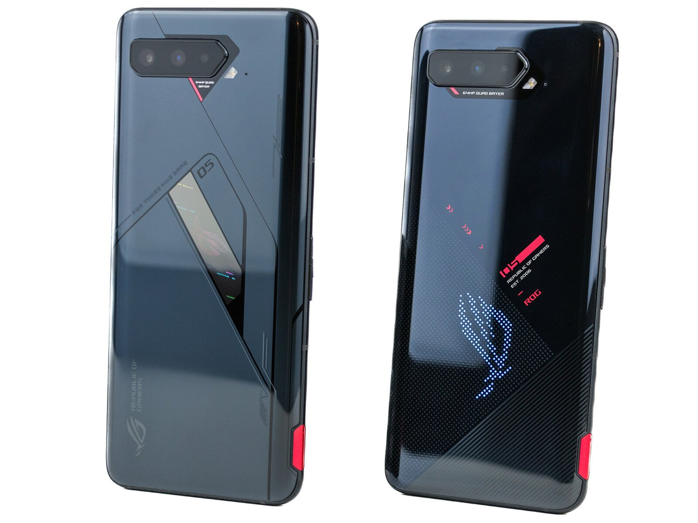
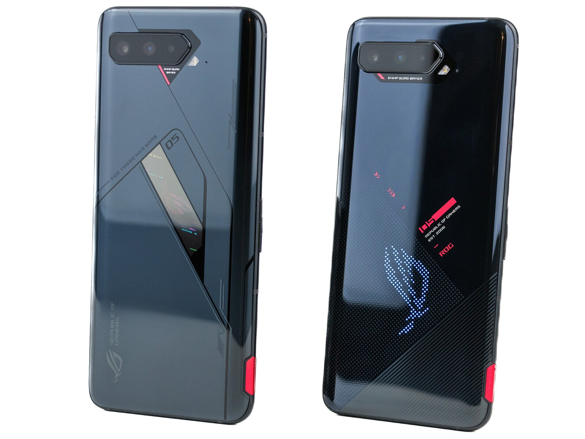
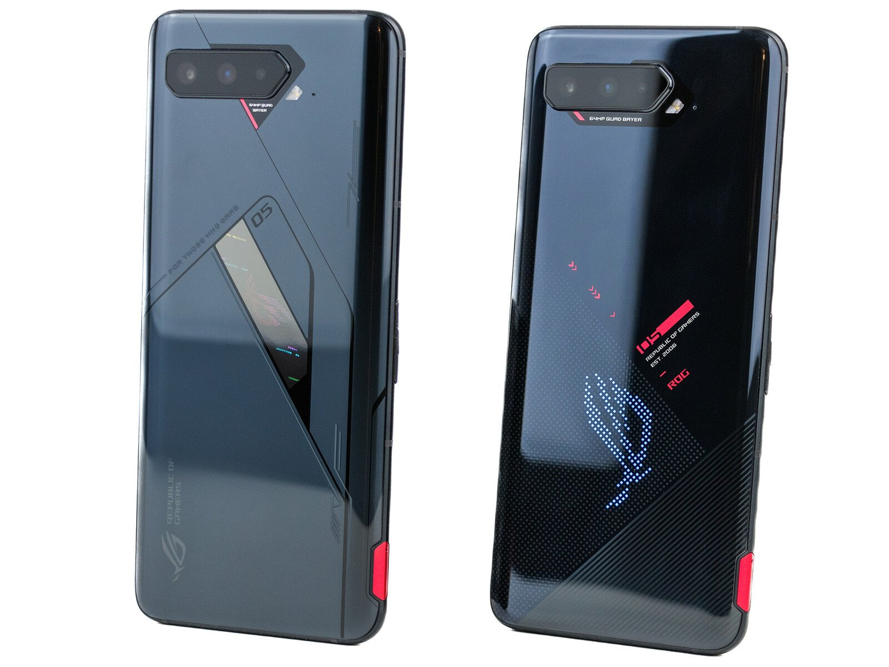

Производительный смартфон оснащен процессором Qualcomm Snapdragon 888 Plus, разогнанным в заводских условиях. Он получил новый модуль нейронной сети, а его частота повысилась с 2,84 до 2,95 ГГц — в итоге производительность выросла почти на 12%. При этом компания ZTE говорит о минимальном уровне троттлинга при многочасовом геймплее. Таких впечатляющих результатов удалось достичь благодаря активной системе охлаждения. Под задней панелью расположен вентилятор, вращающийся со скоростью до 12 000 об/мин. Его шум почти не слышен на фоне игровых звуков, зато вы получаете стабильно высокий FPS. Модель также обладает большой ёмкостью аккумулятора, что обеспечивает долгую автономность работы.
Игровой чипсет Qualcomm Snapdragon 888 работает без разгона, поэтому в играх ААА-класса вы получите на несколько FPS меньше, чем у топовых конкурентов. Зато у смартфона есть инновационная система охлаждения с двумя испарительными камерами. Одна охлаждает центральный процессор, а вторая — транзисторы питания, микросхемы оперативной памяти и графический адаптер. Такое решение исключает теплообмен внутри корпуса, поэтому устройство работает более стабильно с минимальным уровнем троттлинга.
Выбрав такой же мощный процессор Qualcomm Snapdragon 888 Plus, тайваньская компания сохранила консервативное решение — полностью бесшумную пассивную систему охлаждения. В ней используются как двойные радиаторы из графена и меди, так и жидкостная испарительная камера. Такое решение повышает производительность на 15% через час активного геймплея. Если вам этого мало, и вы хотите полностью избавиться от троттлинга, можно купить внешний вентилятор AeroActive Cooler 5. Он снижает температуру процессора в среднем на 10 градусов.
Отличный игровой процессор Apple A15 Bionic входит в число самых мощных мобильных чипов. Кроме того, программная часть айфона оптимально подогнана под железо — в реальности его производительность выше, чем у большинства Android-гаджетов. Это единственная модель, позволяющая получить стабильные 60–120 FPS в тяжёлых мультиплатформенных проектах вроде Genshin Impact и PUBG: New State. Это мощная платформа для игр, поэтому вы сможете играть наравне с владельцами компьютеров, ноутбуков и консолей нового поколения.
Флагманский смартфон активно развивающегося бренда стоит в два раза дешевле своих конкурентов, но не уступает им в производительности. В его основу положен процессор Qualcomm Snapdragon 888 с гибридной системой охлаждения — высоконагруженные компоненты снабжены испарительной камерой, а остальные детали — медными радиаторами. Такое решение позволяет поддерживать безопасную температуру и сводить троттлинг к минимуму, сохраняя при этом небольшую толщину корпуса.